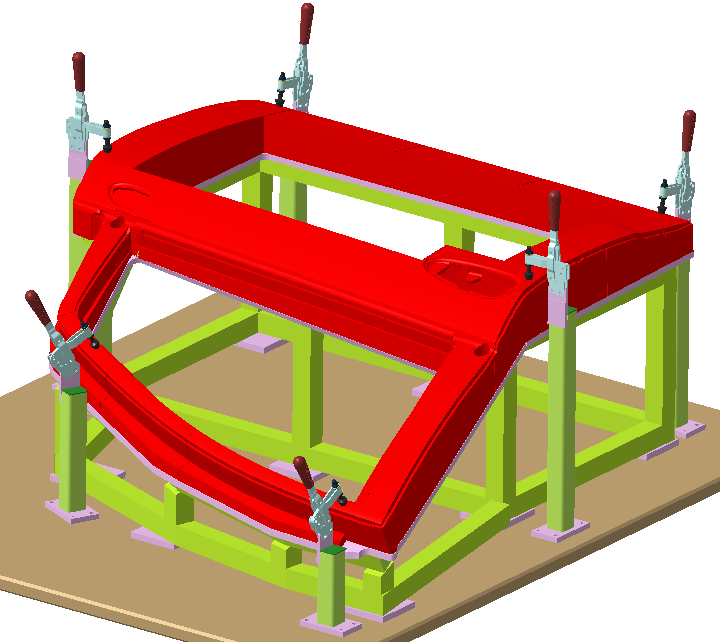
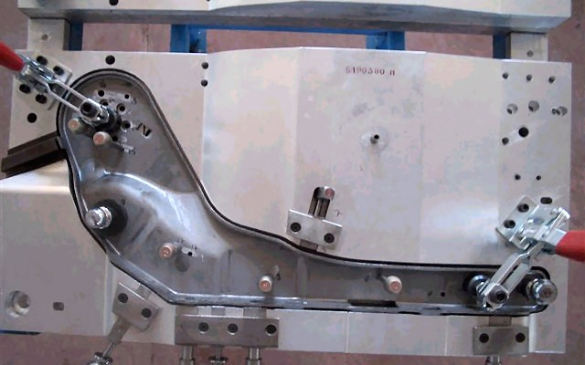
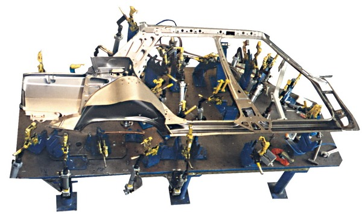
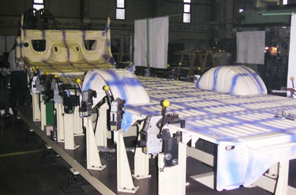

Kurtuluþ Uçar
Teknik Eðitim Fakültesi, Gazi Üniv.
Kasým 2007, Beþevler Ankara
Not: Bu makale ilk defa Mayýs 2008'de TurkCADCAM.net Portalý'nda yayýnlanmýþtýr.
Özet
Fikstür, günümüzde kalýpçýlýk sektöründe oldukça yaygýn kullanýlmaya baþlanmýþtýr. Özellikle sac metal kalýpçýlýðýnda form ve bükme kalýplarýnýn ayrýlmaz bir parçasý olmuþtur. Bu kalýplarýn alýþtýrýlmasýnda kolaylýk saðlamaktadýr. Ayný zamanda büyük ve karýþýk geometrili sac parçalarýn kolaylýk punta kaynaðý yapýlabilmesini saðlamaktadýr.
Özet olaraktan form ve bükme kalýplarý montajý yapýldýktan sonra, istenilen ürünü elde etmek için üzerinde alýþtýrmalar yapmamýz lazým. Bilindiði üzere sac parçalarda her zaman geri esneme vardýr bu bükme kalýplarýnda az ama form kalýplarýnda fazladýr. Her ne kadar analiz programlarý geliþmiþ olsa da 0 hata ile üretim yapaný yoktur.
Kýsacasý fikstür sac metal kalýplarýnýn ve parçalarýnýn üretim, ölçme ve kontrol safhalarýnda daha hýzlý ve daha kolay þekilde yapýlmasýna imkan saðlamaktadýr.
1- Giriþ
Fikstür yönteminde, karmaþýk olan ölçme yöntemlerinden ziyade daha basit ve hýzlý bir þekilde yüzeyleri, kesim hatlarýný, büküm hatlarýný ve delikleri ölçmeyi hedeflenmektedir.
Böylelikle kalýp alýþtýrmalarýnda bize kolaylýk saðlayýp ayný zamanda karýþýk ve ölçmesi zor olan parçalarda kolaylýkla ölçme ve kontrol saðlamaktadýr.
En basit tabiriyle prese baðlanan form ve bükme kalýplarý numune basýmý yapýldýktan sonra sökülüp alýnmaz. Her zaman üzerinde ufakta olsa alýþtýrmalar zýmpara ve kalýpçý taþlarýyla yapýlmaktadýr. Özellikle form kalýplarýnda bu iþlemler haftalarca sürmektedir.
Geliþen teknolojiyle birlikte artýk birçok parçayý basit ölçme yöntemleriyle kontrol edememekteyiz. Bu arada devreye 3 boyutlu dediðimiz ölçüm makineleri girmektedir. Bu makineler de formlu sac parçalarýn ölçülmesi oldukça zor ve zahmetli bir iþtir. Ayný zamanda ne kadar doðru ölçtüðümüzden emin olamayýz. Onun için fikstür yardýmýyla bu zahmetli ve zor iþ ortadan kalkmaktadýr.
2- Fikstür
Karmaþýk olan ölçme yöntemlerinden ziyade daha basit ve hýzlý bir þekilde yüzeyleri, kesim hatlarýný, büküm hatlarýný ve delikleri ölçmeyi kolay ve hýzlý bir þekilde ölçmeye yarayan ve ölçmeye yardým eden aparata denir(1).

Þekil 1.1 Fikstür ve klemp tertibatý (1)
2.1. Kontrol Fikstürü:
Üretimi yapýlan parçanýn basit ve hýzlý þekilde kontrolünü yapmaya yarayan aparata denir. Parça kontrolünde kullanýlan kontrol fikstürlerinin ürün kalitesi açýsýndan önemi büyüktür. Sac parçanýn kontrol fikstürü üzerine doðru konumlanmasý ölçüm için çok önemlidir. Buna göre üzerinde yazan kapatma sýrasý konumlama ve pimlerim doðru yerlere takýlmasý büyük önem arz eder. Karmaþýk geometrili parçalarýn kontrolü zordur. Özelikle kalýbý ilk prese baðlarken kalýbýn ayarlanmasý ve ölçünün yakalanmasý oldukça zaman alan bir iþti.

Þekil 1.2 El freni kontrol fikstürü (3)
2.2. Kaynak Fikstürü:
Montajý zor ve karmaþýk parçalarýn seri bir þekilde kaynak ve punta yapýlmasýna olanak saðlayan aparata denir. Kaynak fikstürleri daha çok otomotiv sektöründe yer bulmaktadýr. Çünkü bildiðimiz üzere otomotiv karmaþýk geometrili sac parçalarýn birleþtirilmesinden meydana gelmektedir. Bir otomobilin iç iskeleti çok karmaþýk ve bir sürü geometrik sac metal parçadan meydana gelmektedir. Bunlarý birbirine montajlamak oldukça zordur. Bunun için kaynak fikstürleri bize büyük kolaylýk ve pratiklik saðlamaktadýr.

Þekil 1.3 Tofaþ D200 sað yan kaynak fikstürü (3)
3- Kontrol fikstürü üretimi
Öncelikle aksi belirtilmedikçe kontrol edilecek sac yüzeyine göre 5mm ofsetli olarak yüzeyler iþlenir. Parça trimini yani kesimini kontrol edebilmek için ise yan yüzeylerin parça trim normalinde yani dik olarak iþlenmesi gerekir, bu da fikstür iþlemeyi en zor yapan özelliktir. Bunu saðlayabilmek için kimi zaman fikstürü parçalý tasarlamak gerekir kimi zaman da birden fazla sefer baðlayýp terse geçen yerleri iþlemek gerekir. Teknik resimde gösterilen yerlere sonda denilen nesneleri baðlayabilmek için hassas ve yüzeye dik delikler delmek gerekir, bu da zor bir iþtir. Fikstürün ölçülebilmesi için bu sondalar referans alýnýr. Bir de bunlar birbirine çok yakýnsa iþiniz daha zordur. Okey alabilmek için Fikstürü defalarca iþlemeli ve defalarca 3d de ölçtürmek gerekir.

Kaynak: Fikssan [4]
3.1. Yapým Malzemeleri
Yüzey formu için ise poliüretan malzemeler kullanýlacaktýr. Bu malzemelerin kodlarý firmalara göre deðiþiklik göstermektedir. Fakat genel olarak fikstürler için kullanýlan aþaðýda detayý verilen malzemeler tercih edilmelidir (1).
a- Yoðunluk: 1,2 g/ cm3 ~ 1,7 g/cm^3
b- Sertlik: 85-90 Shore (ISO 868)
c- Barcol-Sertlik: 30-35
d- Sýkýþtýrma dayanýmý (ISO 604): 90-100 MPa
e- Termal genleþme katsayýsý (DIN 53752): 45-50 10^-6 K^-1
f- Deformasyon ýsýsý (ISO 75): 75-80 °C
g- Renk: Gri,beyaz veya bej olmalýdýr (1). (Yüzeyler beyaz boyanacaðý için açýk renk malzeme tercih edilmelidir.)
4- Sonuç
Geliþen ve sürekli yenilenen teknoloji beraberinde bir sürü kolaylýðý da getirmektedir. Bunun en güzel örneðini ülkemizden vermek mümkündür. 10 yýl öncesine kadar kalýplar elle yapýlýrken þimdi CNC de kolaylýkla üretilmektedir. Buda kalýpçýnýn çalýþma süresini en aza indirmiþtir.
Fikstürde parçalarýn ölçüm ve kontrolünde tekrarlanýlabilirliði saðlamaktadýr. Fikstür yapýmý zor ve zahmetli bir iþtir. Çünkü sýfýr hata olmasý lazým bindelik ölçüm sisteminde. Buda günlerce uðraþmamýz anlamýna gelir. Fakat üretimi bittikten sonra kullanýmý kolay ve pratiktir. Doðru ölçüm ve kontrol yapabilmek için üzerindeki kullanma talimatýnda yazanlarý uyguladýðýmýz zaman hiçbir sorunla karþýlaþmayýz.
Kalýp alýþtýrýrken, üretim esnasýnda kontrol yaparken kontrol fikstürü varsa iþimiz kolaydýr.
Sonuç olarak geliþen teknolojiyle birlikte geometrik þekilleri karmaþýk olan parçalarýn üretiminin artmasý nedeniyle fikstür kalýp sektörünün vazgeçilmezi olmuþtur ve neredeyse artýk her kalýp üretiminden sonra parçanýn fikstür üretimi de yapýlmaktadýr.
Kaynaklar
1- Tofaþ Kalibro Þartnamesi 11.05.06, Bursa,
2- Presmetal Tasarým Aparat Kalýp ve Makina San. Tic. Ltd. Þti. > www.presmetal.com.tr
3- Sami Ataþimþek, Sac Kalýplarý, 323, Bursa, 1977
4- Fikssan Fikstür San. ve Tic. A.Þ. > www.fikssan.com.tr |